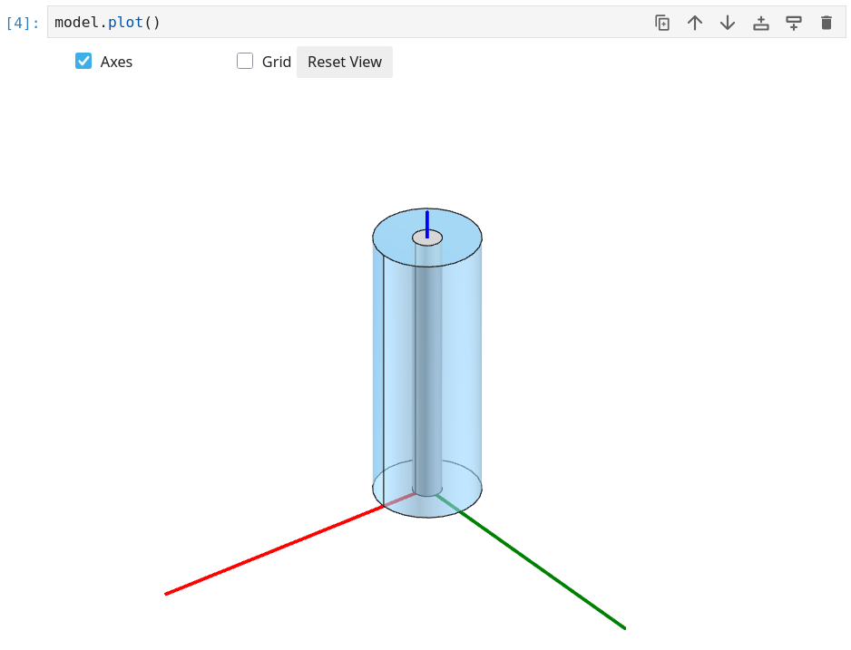
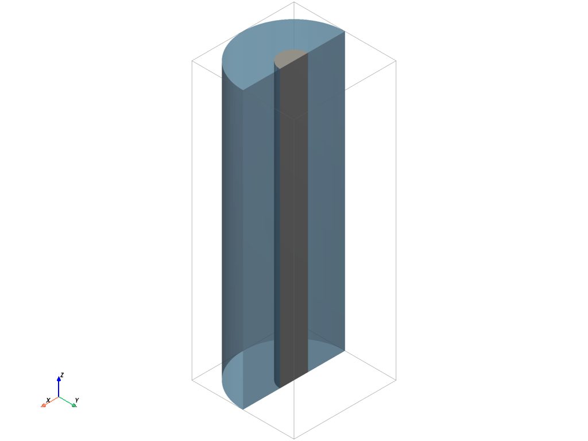
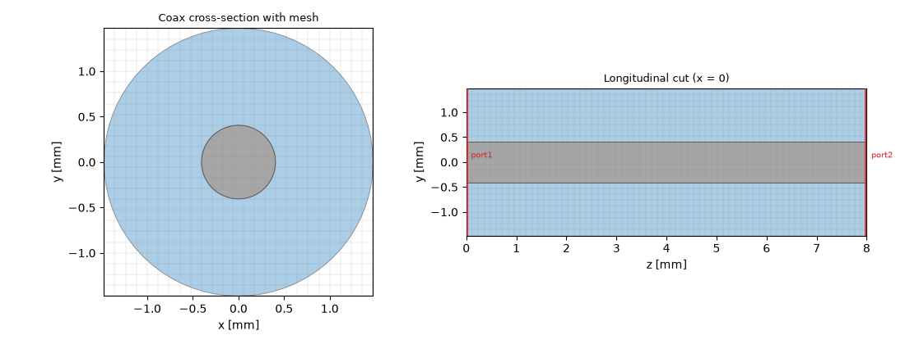
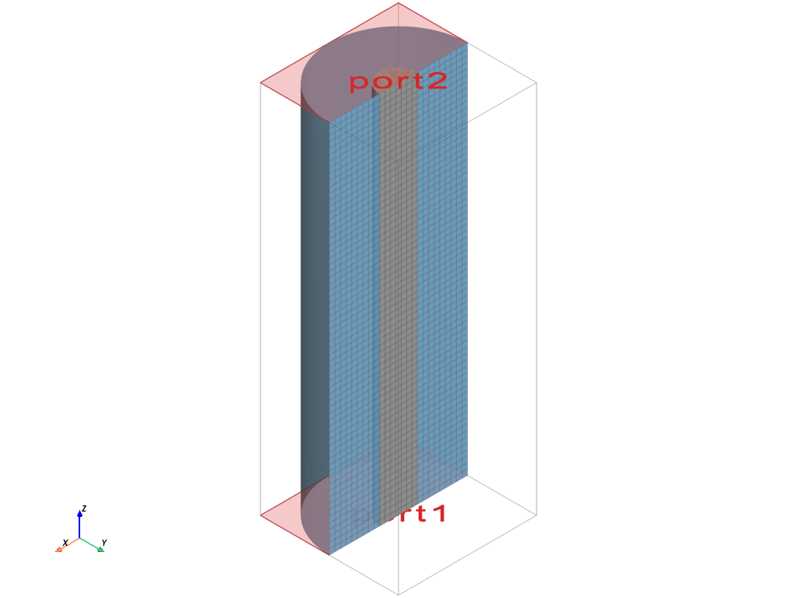
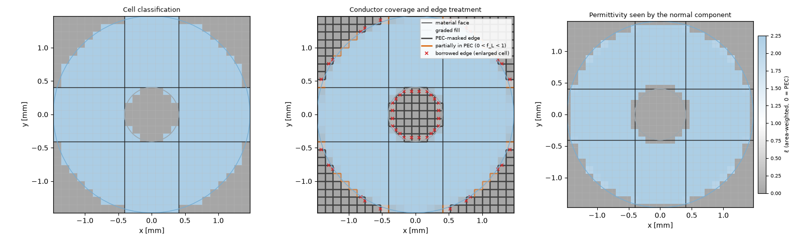

Note
Go to the end to download the full example code.
A coaxial line: solids, booleans, and a coax port#
The first tutorial needed no geometry at all — one air brick, and every conductor was a boundary face. This one builds a real three-dimensional structure: a short piece of RG-58 class coaxial cable, modelled from solid primitives and a boolean operation. Along the way it introduces the second way of declaring a port — by naming the analytical family of its cross-section — and the habit of reading a port report that carries both a numerical and a reference impedance.
The problem#
A coaxial line guides a TEM wave between an inner conductor of radius \(r_i\) and a shield of radius \(r_o\), filled with a dielectric of permittivity \(\varepsilon_r\). Its line impedance has a closed form,
which makes it the classic first “real” validation case. We use the dimensions of an RG-58 class cable — solid polyethylene, \(r_i = 0.405\) mm, \(r_o = 1.475\) mm, \(\varepsilon_r = 2.25\) — giving \(Z_0 \approx 51.7\) Ohm. The first higher-order coax mode (TE11) appears near 34 GHz; simulating up to 6 GHz keeps us safely in the single-mode TEM band, so the S-parameters stay plain S11 and S21.
import math
import matplotlib.pyplot as plt
import numpy as np
import magnelio as mio
from magnelio import geo, plots, ports
from magnelio.constants import *
r_i = 0.405e-3 # inner conductor radius [m]
r_o = 1.475e-3 # shield (dielectric outer) radius [m]
eps_r = 2.25 # solid polyethylene
L = 8e-3 # line length [m]
f_max = 6e9 # upper band edge [Hz]
z_formula = ETA0 / (2 * math.pi * math.sqrt(eps_r)) * math.log(r_o / r_i)
print(f"target impedance: {z_formula:.3f} Ohm")
target impedance: 51.665 Ohm
Building the geometry#
Two solids and one boolean are enough:
the dielectric is a
Cylinderof radiusr_owith the inner conductor’sCylindercarved out of it —Differenceproduces the annulus;the inner conductor is the small cylinder itself, added as PEC.
The shield is not drawn at all. The model’s background material —
what fills every cell no shape claims — is set to PEC, and the
domain boundary closes as PEC by default. Everything outside the
dielectric, including the box corners around the circle, is
therefore solid conductor: the shield comes for free, and its inner
surface is exactly the dielectric boundary at r_o.
pec = mio.Material.pec()
polyethylene = mio.Material.from_isotropic(name="polyethylene", epsilon=eps_r)
dielectric = geo.Cylinder(
origin=(0.0, 0.0, 0.0), radius=r_o, height=L, axis="z", material=polyethylene
)
inner = geo.Cylinder(origin=(0.0, 0.0, 0.0), radius=r_i, height=L, axis="z", material=pec)
model = mio.GeometryModel(background=pec)
model.add(geo.Difference(dielectric, inner)) # the dielectric annulus
model.add(inner) # the inner conductor
GeometryModel(2 shapes, background=PEC)
Looking at the model in three dimensions#
The cross-sections used throughout these pages are flat by
necessity — they render into a static document. In a Jupyter
notebook, model.plot() opens the model as a rotatable,
zoomable 3D view instead, which is the faster way to check that a
boolean did what you meant. Every tutorial can be downloaded as a
notebook (the link at the bottom of the page), so this is one call
away at any point:
model.plot()
{kind=link}

The coax port#
In the first tutorial, PortWaveguide simply
said “solve whatever modes this cross-section has”. When the
cross-section belongs to a family with a closed-form solution, a
PortAnalytical says so explicitly. The
port still solves its mode on the actual grid — but the report will
carry the analytical value alongside, as a built-in cross-check.
model.add_port(
ports.PortAnalytical(
name="port1",
plane="zmin",
family="coax",
inner_radius=r_i,
outer_radius=r_o,
epsilon_r=eps_r,
)
)
model.add_port(
ports.PortAnalytical(
name="port2",
plane="zmax",
family="coax",
inner_radius=r_i,
outer_radius=r_o,
epsilon_r=eps_r,
)
)
GeometryModel(2 shapes, background=PEC)
Mesh#
At 6 GHz the wavelength is huge compared to the cable, so the mesh size is dictated entirely by the geometry: the grid has to resolve the annulus. A 0.12 mm cap gives about nine cells across the dielectric gap.
mesh = mio.Mesh.from_geometry(model, mio.MeshControl(max_cell_size=0.12e-3), f_max=f_max)
print(f"grid: {mesh.Nx} x {mesh.Ny} x {mesh.Nz} cells")
# Two cuts: across the cable, and along it. The longitudinal cut
# shows that the grid is uniform along the line — nothing varies in
# z, so nothing there needs resolving.
fig, axes = plt.subplots(1, 2, figsize=(11, 4.2))
plots.plot_cross_section(
model, "z", L / 2, mesh=mesh, ax=axes[0], title="Coax cross-section with mesh"
)
plots.plot_cross_section(
model, "x", 0.0, mesh=mesh, ax=axes[1], flip=True, title="Longitudinal cut (x = 0)"
)
fig.tight_layout()

grid: 25 x 25 x 67 cells
The circle is rendered on a rectangular grid as a staircase, with partially filled cells treated by conformal material matrices — keep this picture in mind when reading the port report below.
Numerical mode vs. analytical reference#
analysis = mio.AnalysisScatteringTD(mesh=mesh, f_max=f_max, verbose=False)
report = analysis.solve_ports()["port1"]
print(report)
z_num = report.z_line_num
z_ref = report.z_line_ref
print(f"z_line numerical : {z_num:7.2f} Ohm ({100 * (z_num / z_ref - 1):+.1f} %)")
print(f"z_line reference : {z_ref:7.2f} Ohm")
Port 'port1' — 1 mode(s)
z_line = 49.67 Ω (numerical), 51.67 Ω (reference, Δ -3.87 %)
[0] TEM_lap00 TEM f_c = 0.0000 GHz z_line = 49.67 Ω
z_line numerical : 49.67 Ohm (-3.9 %)
z_line reference : 51.67 Ohm
The two impedances answer different questions. The reference is the closed-form value of the ideal circular line — the design target. The numerical value is the impedance of the staircased cross-section the grid actually represents; it differs by a few percent here and approaches the reference as the mesh is refined (not monotonically — the staircase reshapes at every resolution). The gap between the two is an honest measure of how well the mesh captures this cross-section.
The transverse mode profile shows the expected radial TEM field, strongest at the inner conductor. Passing the geometry model overlays the port-plane cross-section — the grey disc is the inner conductor, the tinted annulus the dielectric:

Run and S-parameters#
result = analysis.run(excited=[("port1", 0)])
f = result.f_axis
s11_db = result.db("port1", "port1")
s21_db = result.db("port2", "port1")
fig, ax = plt.subplots()
ax.plot(f / 1e9, s11_db, label="|S11|")
ax.plot(f / 1e9, s21_db, label="|S21|")
ax.set_xlabel("frequency [GHz]")
ax.set_ylabel("magnitude [dB]")
ax.set_title("RG-58 class coax, 8 mm")
ax.grid(True)
ax.legend()
print(f"max |S11| in band: {s11_db.max():6.1f} dB")

max |S11| in band: -110.5 dB
As for every uniform matched line, |S21| sits at 0 dB and
|S11| at the numerical floor — around -110 dB here. Note what that floor
means: the port’s discrete mode matches the discrete line so well
that essentially nothing reflects, even though the staircased
impedance differs from the ideal one by a few percent. Port
matching is between port and grid; the reference impedance is
between grid and reality.
The transmission phase must follow the dielectric-loaded electrical length \(\beta L\) with \(\beta = 2 \pi f \sqrt{\varepsilon_r} / c_0\):
s21 = result.S("port2", "port1")
phase_sim = np.unwrap(np.angle(s21))
phase_ref = -2 * np.pi * f * math.sqrt(eps_r) / C0 * L
fig, ax = plt.subplots()
ax.plot(f / 1e9, np.degrees(phase_sim), label="arg S21 (simulated)")
ax.plot(f / 1e9, np.degrees(phase_ref), "--", label=r"$-\beta L$ (analytic)")
ax.set_xlabel("frequency [GHz]")
ax.set_ylabel("phase [deg]")
ax.set_title("Transmission phase vs. analytic")
ax.grid(True)
ax.legend()
print(f"max phase deviation: {np.degrees(np.abs(phase_sim - phase_ref)).max():.3f} deg")

max phase deviation: 0.099 deg
Where to go next#
New in this tutorial: solids and booleans
(Cylinder,
Difference), the PEC background as an
implicit outer conductor, an analytical port family
(PortAnalytical), and the
numerical-vs-reference reading of a port report. The next tutorial
excites both ports of this line and assembles the full S-matrix —
including what to check when a device has more ports than modes of
interest.
Total running time of the script: (0 minutes 7.438 seconds)